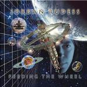

Home Artist links Label link

Jordan Rudess - Feeding The Wheel
| Artist: | Jordan Rudess |
| Title: | Feeding The Wheel |
| Label: | Magna Carta MAX-9055-2 |
| Length(s): | 62 minutes |
| Year(s) of release: | 2001 |
| Month of review: | [01/2001] |
Line up
Jordan Rudess - keyboards, vocal effects, electric guitar on 3
Terry Bozzio - drums on 2-7, 9, 11
Eugene Friesen - cello and voice on 2, 4, 8, 9
Steve Morse - guitar solo's on 2, 7
John Petrucci - guitar on 2, 5, 9, 11
Billy Sheehan - bass on 7
Mark Wood - electric 7 string viper violin on 2, 5, 9, 11
Barry Carl - voice on 1
Peter Ernst - nylon string guitar on 3
Bert Baldwin - keyboards strings on 5, vocal effects
Tracks
| 1) | The Voice | 0.19
|
| 2) | Quantum Soup | 11.03
|
| 3) | Shifting Sands | 6.02
|
| 4) | Dreaming In Titanium | 4.10
|
| 5) | Ucan Icon | 5.46
|
| 6) | Center Of The Sphere | 1.38
|
| 7) | Crack Of The Meter | 6.13
|
| 8) | Headspace | 4.00
|
| 9) | Revolving Door | 8.39
|
| 10) | Interstices | 4.05
|
| 11) | Feed The Wheel | 7.14
|
Summary
This album has a story, or actually the promo has. When I first got it, I
got wary when I heard King Crimson's Red as the fourth track, and found all
timings were way off. It turned out I had gotten a misprint with Niacin's
forthcoming album. Later on I did get the real version, which you can
find reviewed here.
I probably need not tell you that Rudess is the keyboardist of Dream Theater
at this time. Now, with the help of various friends, he has recorded a solo
album.
The music
After a short vocal introduction, we move right into the longest track on the
album, Quantum Soup. In this track we hear a varied palette of keyboards.
The track itself is at times rather jazzy, the more melodic parts reminding
me more of television series tunes. Although one gets the impression that
the music is one long keyboard solo, the guitar does figure, but mostly in
a rhytmic fashion. Of course, Bozzio handling the drum, the music sounds
dynamic. Later, the guitar gets a solo for itself. The music is very much
like jazzrock now. At some points I am reminded of UK, but there's more
variety (in this case, I am not all for it though, because it comes over
arbitrary at times). After a bit of jazzy piano horn like keyboards take
over (a sound of which I am not that fond) and yes we have time for another
somewhat rougher guitar solo (mixed way in the back. A nice stereo effect.)
All in all, this is one of those instrumental songs in which a number of
different parts have been strung together, most of them returning once in a
while. The fingerquick jazz piano gives way then to a bass dominated passage
after which the guitars start to grind. The final part finds us back with the very
merry main melodic theme. I am not too happy with this theme, because it
sounds a bit too melodic to my ears, a bit too optimistic.
Shifting Sands is a much quieter track, a bit stately even with keyboards
which sound like weird trumpets and all kinds of bubbly and piping keys
in addition. I am reminded of Yanni's album Out Of Silence,
notwithstanding the nylon string guitar. Again, the melodies are maybe a bit
too accessible. It doesn't stay that way though, because later on the music
becomes a bit more freaky with meandering excursions on guitar and keyboards,
entwined. The music again has this television music feel.
A darker sound we find on Dreaming In Titanium, which opens very
percussively. At times, the music gets to be quite playful, but the wackiness
of it, the humour almost, makes it a nice one. Later on the music gets
in a bit of a wild Jan Hammer water. Ucan Icon opens atmospherically, and soon
rocks away nicely. A rather active, almost hectic track, but also plenty
of alternation a la the first track: wailing synths take the place a fast
jazzy piano, showing the musicians prowess. I think I preferred the all out
rock.
After the short Center Of The Sphere, we rock away again on the rollercoaster
ride of Crack Of The Meter. This is highly energetic jazzrock with again
a varied keyboard sound. The sounds are good. The track has a bit of a jam
feel with lots of groovy organ. It is not an improvisation though.
Headspace is a sad sounding track, a bit world music in feel with whirly and
swirly keyboards. The melody beneath it all, is again on the mellow side.
Revolving Door is quite different in the way that it opens: we hear
very real sounding neo-classical music, music that would do well
in a large scale Hollywood production. Afterwards, the music moves into the
direction of Yanni. Lots of brassy sounds on this one and a heavy guitar
solo as well (for the DT fans one would imagine). The song even has a rap
in it, the dazzling keyboard runs that follow take you away. A bit of easy
going percussive playing then followed by piano, the by Yanni style bombast
(Keys To Imagination).
Piano opens Interstices. This shows us another face of Rudess: the piano man.
Again, the music is a bit soundtrackish, but becomes at times quite forceful
and playful. Very nice and really well played.
The final track is a good conclusion in which the activeness of the musicians
is usually high, but of course Rudess did put in a few of these mellow
melodies. The album ends with an extra in the form of the voice returning.
Conclusion
Notwithstanding the technical qualities, I have to admit being a bit disappointed
with this one. The sounds are good, the rhythm section is great and of course
the versatility of Rudess is undeniable. During the active parts of the album
when the band jams away and obtains an energetic style in the jazzrock realm
(but more rich in keyboards as you might imagine), everything is fine. But
the quieter more melodic parts are often a bit too accessible and I can't shake
this television series music feel (remember Jan Hammer?), but not the good
kind. Also, in the longer tracks were variedness reigns, the transitions seem
to me unnatural. What surprised me was that the heavy guitars of progmetal
have found their place on this album. More surprising even is that the music
often reminded me of the earlier records of Yanni.
© Jurriaan Hage